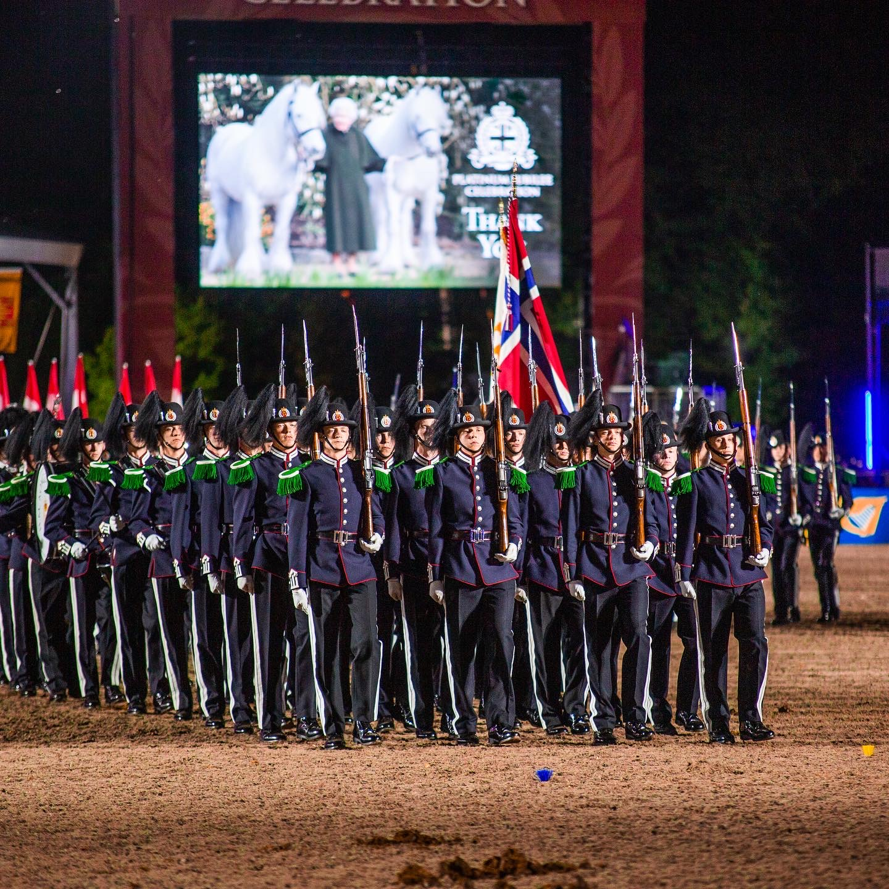
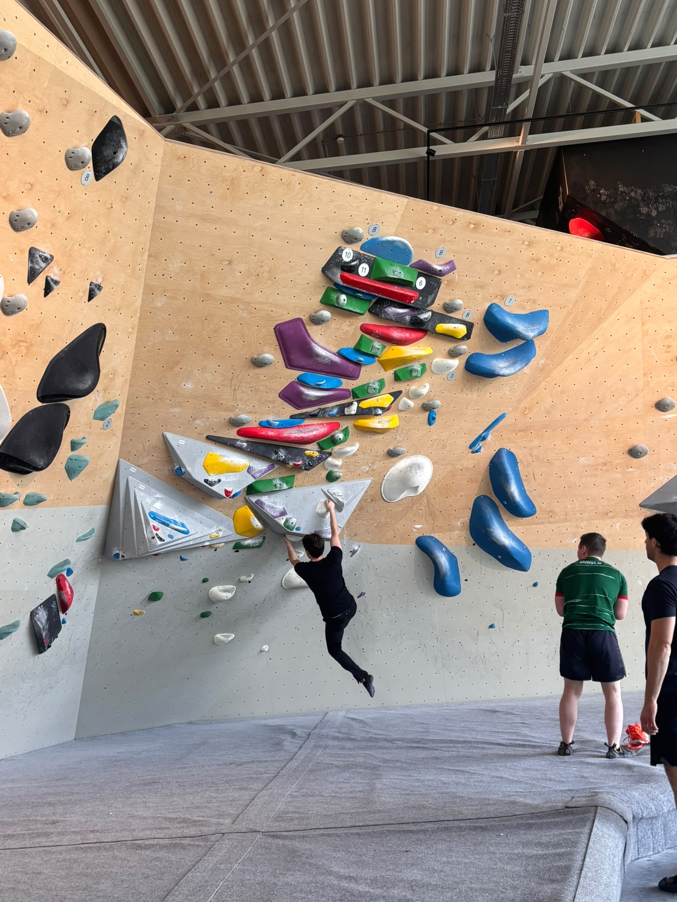
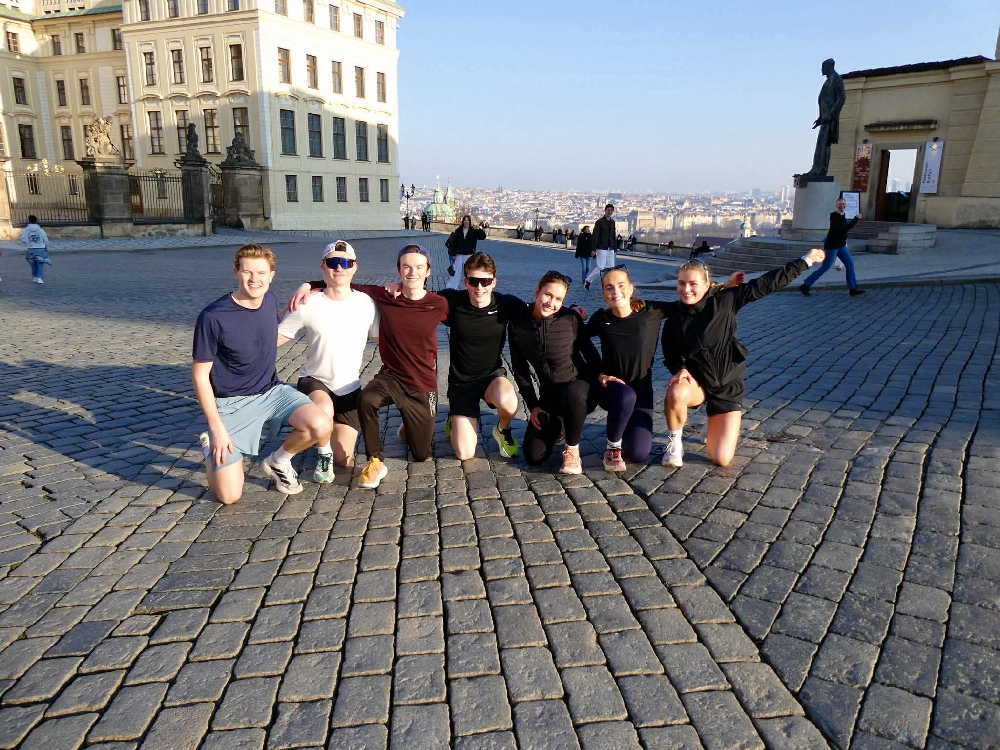
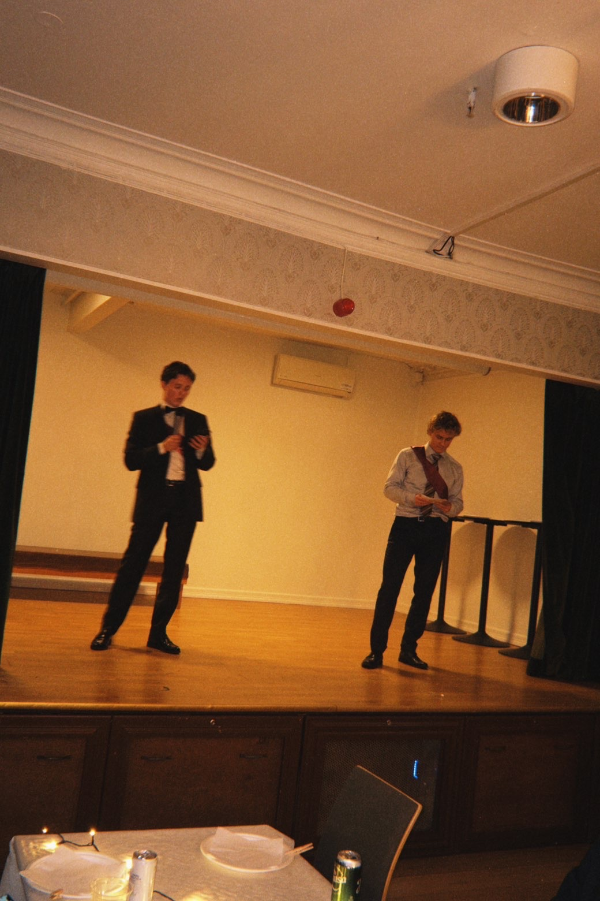

Min reise
-
 2018–2021
2018–2021Norske Talenter
I 2018 begynte jeg på medier og kommunikasjon på videregående. Mens jeg fortsatt gikk på videregående, deltok jeg i Norske Talenter i 2019 sammen med Jonatan Brekke, og vi kom til semifinalen.
-
2021–2022
Drilltroppen
Etter videregående tjenestegjorde jeg i Hans Majestet Kongens Garde. Etter en seleksjonsperiode kom jeg inn i Drilltroppen, som representerer Garden gjennom presisjonsdrill og oppvisninger i Norge og utlandet.

-
2022–2024
Fra sykehus til UX
Etter Forsvaret begynte jeg å jobbe som portør på Haukeland universitetssjukehus. Der fikk jeg se hvor mye de digitale systemene betyr i en travel arbeidshverdag – og hvor stort forbedringspotensial enkelte av dem hadde.
Jeg begynte på kognitiv vitenskap, men fant raskt ut at jeg heller ville jobbe med å forbedre brukeropplevelser. Etter ett år byttet jeg derfor til medie- og interaksjonsdesign.

-
2026 / I dag
Her er jeg nå
Jeg er på siste året av bacheloren i medie- og interaksjonsdesign ved Universitetet i Bergen, og er for øyeblikket på utveksling ved Utrecht University i Nederland.
Når jeg er tilbake i Bergen for å skrive bacheloroppgaven våren 2027, går jeg tilbake til rollen som løpeleder i SVI Løpegruppe – en studentløpegruppe med rundt 200 medlemmer.
Utenom studiene.
Et lite utvalg



